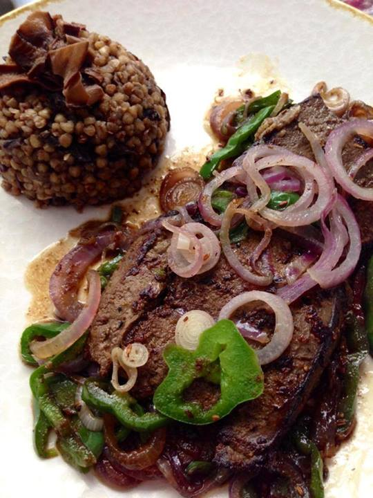
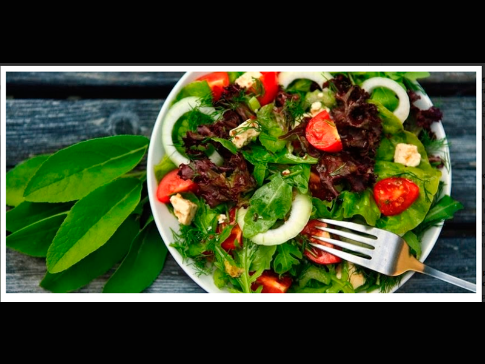

Estimados Usuarios Campher Gluten Free |
|||
Pone a su disposisción algunas recetas para cambiar malos hábitos alimenticios por nuevos y mejores. algunas de páginas amigas como de la página Verde y Rosa Ecuador. Que se destaca por consejos de habitos saludables y alimentacion inteligente. Presentamos la siguiente receta libre de gluten. Cabe destacar que para organismos afectados como los de nuestros niños Tea, tdah y personas con enf celiaca, tiroiditis, y otras condiciones autoinmunes, es indispensable consumir organos animales como el higado por su maravilloso aporte reparador del organismo, asi lo recomiendan el Dr William Shaw, tambien en su libro la Dra Natasha Campbell Mc Bride, entonces este post con la receta nos viene como anillo al dedo, que lo disfruten |
|||
HIGADO DE RES A LA VERDE & ROSA |
|||
 El hígado lo preparo como me enseñó mi mami y todos vibrábamos en casa: "HÍGADO DE RES VERDE & ROSA".
Primer paso: adobar el hígado con el aliño Verde y Rosa, comino y pimienta. Luego poner el aceite en el sartén de cerámica (ya todos consíganse uno porfa, es lo mejor para las cocciones y son lo más saludables) y saltear ligeramente la cebolla y el pimiento a los que rociamos un poquito de comino, sal y pimienta. Retirar de inmediato. Agregar sal al gusto al hígado, colocarlo en ese aceite que queda bien caliente en temperatura medio alta y dorar. Empezará a oler rico a tostadito cuando se ha dorado, en ese momento darle la vuelta. No aplastar el hígado ni moverlo mucho, dejar que a penas dore y agregar los vegetales previamente salteados. Para esto el fondo de cocción ya se ha formado (se pone cafecito el fondo del sartén), agregar un chorro de caldo de pollo natural si tienen congelado como yo, también un chorro de agua filtrada pura funciona. El deglaseado o levantamiento del fondo de cocción se hace echando el chorro de agua y moviendo el sarten para que su contenido, el hígado y los vegetales ayuden a desprender el fondo de cocción y todo su sabor: es el secreto para que quede sabroso . Tapar de inmediato. ¡Todo esto es en pocos segundos! Dejar que de un hervor sin dejar secar el líquido (nos 30 segundos) y apagar. Debe quedar jugoso. Tradicionalmente se sirve con arroz blanco y papas fritas o salteadas, también con patacones o “moro de lentejas” y hasta con puré de papa. Yo no tuve tiempo hoy y lo serví con un “risotto” de buckwheat orgánico con hongos secos que había sobrado del otro día (extraña combinación). Con papitas fritas de zanahoria blanca o puré de zanahoria blanca (zanahoria blanca al vapor majada con mantequilla o ghee) queda delicioso. Espero les sirva la receta. A mí me gustaba tanto el hígado en casa que lo probé en muchos sitios hasta que entendí que no había ninguno siquiera parecido al de mi mami, por eso solo lo como preparado con su súper receta. |
|||
ENSALADA PALE |
|||
 Un nuevo estudio vincula el peso extra con la mala calidad ósea en mujeres jóvenes. A fin de no detenerse en lo negativo, vamos a pasar a formas de impulsar la salud ósea , sin añadir lácteos a la dieta. |
|||